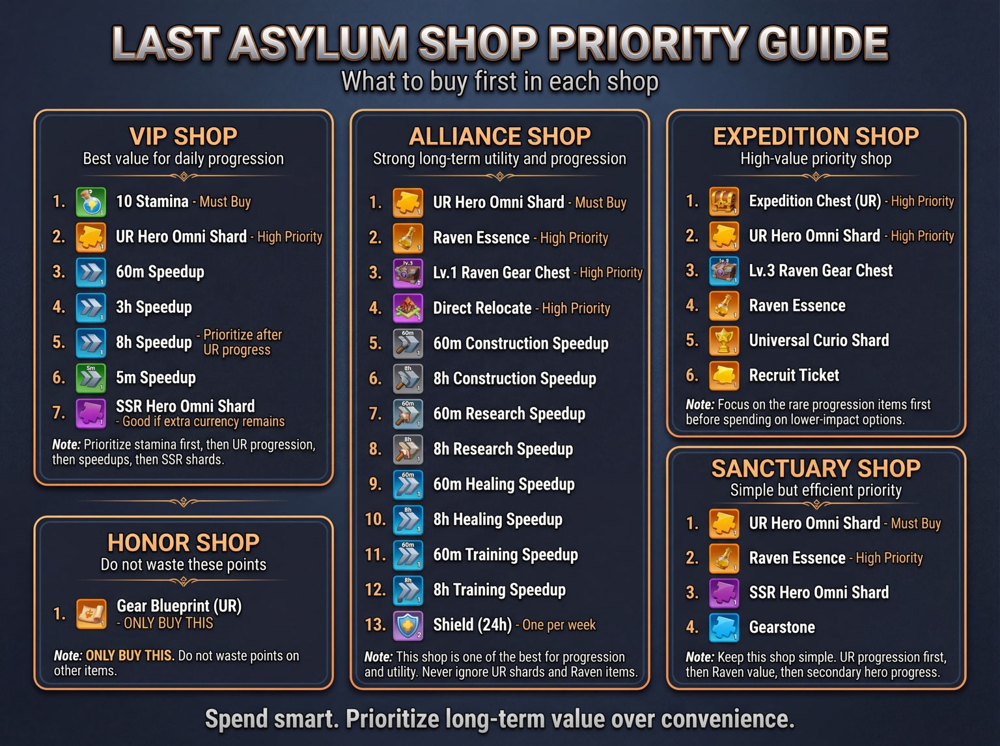

3. Shop Priorities
Core principle
Spend for long-term progression, not convenience. Shop currencies are limited. Rare progression materials generally come before common resources and speedups.
Use the graphic as the fast reference for the VIP, Alliance, Expedition, Honor, and Sanctuary shops. Priorities can change as your account changes, but avoid draining limited currency on items that are easy to obtain elsewhere.
Honor Shop
UR Gear Blueprint is the priority.3. Priorités des boutiques
Principe
Dépensez pour la progression à long terme, pas pour la commodité. Les monnaies de boutique sont limitées; les matériaux rares de progression passent généralement avant les ressources communes et accélérations.Utilisez l'image comme référence rapide pour les boutiques VIP, Alliance, Expédition, Honneur et Sanctuaire. Évitez de vider une monnaie limitée sur des objets faciles à obtenir ailleurs.
Boutique d'Honneur
Le plan d'équipement UR est prioritaire.